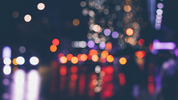
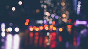

Unique gradient generator
This tool helps you to generate beautiful blurry background images that you can use in any project. It doesn't use CSS3 gradients, but a rather unique approach. It takes a stock image, extracts a very small area (sample area) and scales it up to 100%. The browser's image smoothing algorithm takes care of the rest.
You can then use the image as an inline, base64 encoded image in any HTML element's background, just click Generate CSS button at the bottom of the app. Select source images from the gallery or use yours, the possibilities are endless.
Goodies
- Use your keyboard: arrow keys help to navigate precisely while the esc key hides the whole UI, and R randomizes the settings.
- Save HTTP requests, serve the background instantly, provide unique designs.
- Use your own images
- Share your design via URLs
Credits
This tool was dreamed, developed, directed, executive produced by Tibor Szász. The images used in the project are all public domain stock images. Sources can be found in the image titles. Technologies used: Semantic UI, Dat.GUI, SASS, ES6, Pen and paper.